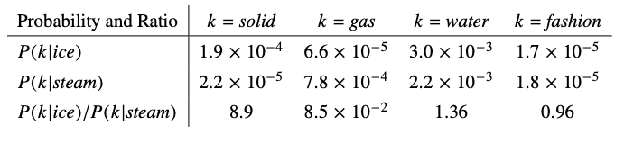
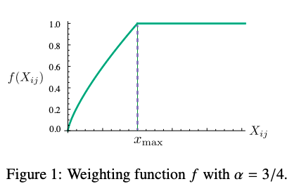

GloVe
论文：https://www.aclweb.org/anthology/D14-1162
相较于skip-gram+softmax模型，GloVe利用了语料数据集的全局统计信息，并使用最小二乘法重新设计目标函数。
论文解读
相关的数学符号定义如下：
词-词共现矩阵：X
词j出现在词i上下文的次数：
令表示出现在词i上下文的所有词的次数总和
令表示词j出现在词i上下文窗口中的概率
假设i=ice，j=steam，这两个单词的关系可以通过学习它们分别与第三个词的共现概率的比率来表示。
假设k=solid，那么k与i更加相关，因此我们希望的值比较大。同样的，k=gas，那么k与j更加相关，因此我们希望的值很小。那么对于k=water或者fashion时，k同时与i和j相关或者不相关，因此应该接近1。上述规律如下表所示：

综上所述，比率涉及到i,jk三个词，这个比率的一般形式表示如下:
此时，为词向量。
后面的公式演变都是为了找到函数F使得，式(1)左右两边接近或相等。
为了表示词向量在向量空间的线性关系，式(1)使用差分的形式进行表示：
式(2)的左边参数为向量，右边为标量，我们可以使用比较复杂的神经网络来实现这个F函数，但是神经网络会把我们试图获取到的线性关系抵消掉。因此，使用向量点乘的方式来表示左边的参数：
首先，令函数F是同质的，则可得到:
式(3)和式(4)一一对应，可得到：
令，则式(4)表示为
式(6)中，独立于k，所以该项可以都放在的偏置项中；最后再为加上一个偏置项，使得得到的式(7)满足词向量中的线性结构，即i,k同质：
式(7)可以发现，我们可以通过词向量和偏执项一起来表示词共现次数的log值。
我们的目标是使得等式两边的差距最小化，因此自然而言的就想到使用平方差损失函数来构建目标函数。
还有一个问题，那就是词的权重都是一样的，而我们希望对于很少出现(可能是噪声)，或经常出现的词的权重不要太大。因此，在式(7)的基础上引入权重:
此处，V为字典大小，通过实验，作者得到权重函数如下所示:

此处。
代码实现
1 | import numpy as np |